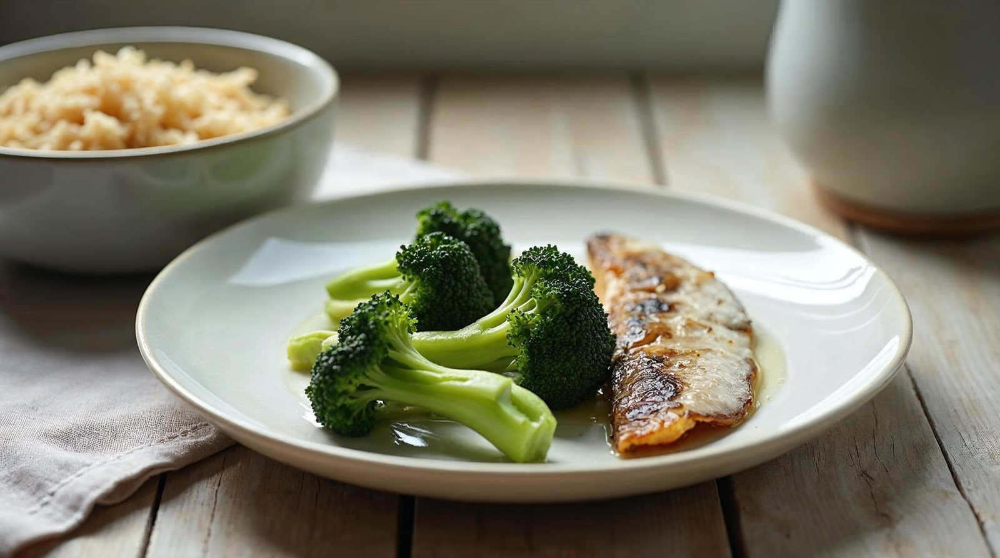
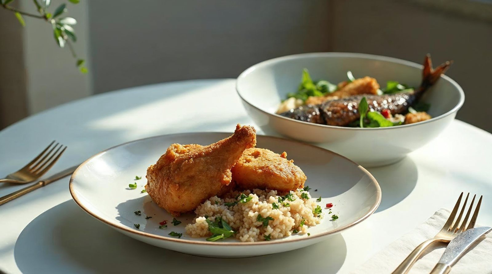
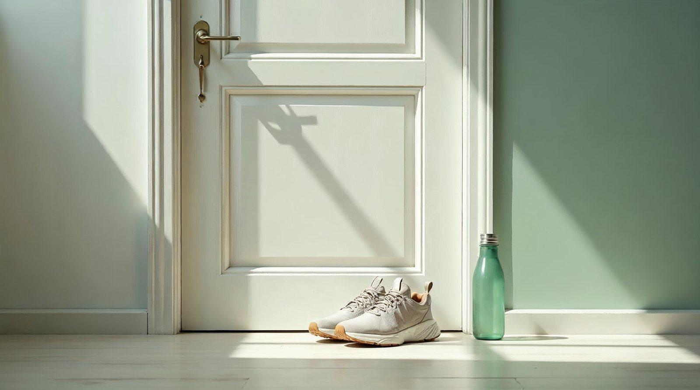

이종호 한의사 감수좋은꿈참사랑한의원 대표원장 (한의사 면허번호 19769)발행 2026-11-23 · 수정 2026-11-27
이 글의 차례
- 왜 이런 불편이 생길 수 있나요
- 먼저 이렇게 여쭙니다
- 일상에서 먼저 해 볼 수 있는 것
- 한의원에서 함께 살필 수 있는 경우
- 예를 들어 이런 경우가 있습니다
- 자주 하는 오해
- 스스로 점검해 보세요
- 얼마나 지켜보고 언제 상담할까요
- 수치가 높은 것과 몸이 아픈 것은 같은 이야기인가요?
- 왜 술과 단 음료가 중성지방과 이어질까요?
- 회식이 잦은 주는 이렇게 지내 보세요
- 다음 검사 전에는 이렇게 준비해 보세요
- 결과지에서 같이 보면 좋은 칸
- 몸이 보내는 신호도 함께 봐요
- 음료 속에 숨은 당을 찾아보세요
- 걷기를 하루에 붙이는 법
- 술자리를 줄이는 말 한마디
- 가족력이 있다면 조금 더 일찍
- 마른 체형이어도 확인해요
- 제가 할 일과 부탁드릴 한 가지
- 처음 오시면 이런 순서로 진료합니다
- 이렇게 기록해 오시면 상담이 쉬워집니다
- 이런 증상은 먼저 확인이 필요합니다
- 관련 글
검진 결과지를 펼쳤는데 중성지방 칸에 높다는 표시가 보이면 덜컥하시죠. 아픈 데도 없는데 숫자만 높다니, 뭘 어떻게 해야 할지 막막해지는 게 당연해요.
원래 그래요. 중성지방은 검사 전 식사와 음주에 영향을 많이 받는 항목이거든요. 그래서 저는 먼저 검사 조건을 확인하고, 술·단 음식·활동 같은 생활을 함께 점검해요. 수치의 해석과 약 처방은 내과 진료를 따릅니다.
숫자는 그동안의 생활이 남긴 기록이에요. 그 기록을 같이 읽어 보면 어디서부터 손볼지가 보이는 경우가 많아요. 겁을 주려는 숫자가 아니라, 길을 알려 주는 숫자로 보시면 돼요.
왜 이런 불편이 생길 수 있나요
- 검사 전 충분히 금식하지 않았거나 전날 술과 기름진 음식을 먹으면 높게 나올 수 있습니다.
- 술과 단 음료, 밥·면·빵 같은 탄수화물을 많이 먹는 습관과 관련될 수 있습니다.
- 체중, 특히 뱃살이 늘고 활동이 줄면 함께 오르는 경우가 많습니다.
- 혈당 문제나 갑상선·신장 질환, 일부 약과 함께 나타나기도 해 내과 확인이 필요합니다.
먼저 이렇게 여쭙니다
- 검사 전에 몇 시간 금식했나요? 전날 술자리나 기름진 식사가 있었나요?
- 술과 단 음료, 간식은 일주일에 얼마나 드시나요?
- 최근 체중이나 허리둘레가 늘었나요?
- 지질을 낮추는 약이나 다른 약을 드시나요?
일상에서 먼저 해 볼 수 있는 것
- 술자리 횟수와 한 번에 마시는 양부터 줄이기
- 단 음료와 과일주스를 물이나 무가당 차로 바꾸기
- 밥과 면의 양을 조금 줄이고 채소·단백질을 먼저 먹기
- 식후 10~15분 가볍게 걷기를 꾸준히 하기
- 다음 검사는 안내받은 금식 조건을 지켜 받기

한의원에서 함께 살필 수 있는 경우
- 기름진 식사와 술자리가 잦아 몸이 무겁게 느껴지는 경우 식습관과 활동 리듬을 함께 살핍니다.
- 검진 수치가 신경 쓰여 생활을 바꾸고 싶은 경우 식사 구성과 걷기 습관을 함께 정합니다.
- 피로와 식후 졸림이 함께 있는 경우 수면과 소화 상태를 살핍니다.
좋은꿈참사랑한의원에서는 결과지의 숫자만 보지 않고, 진맥과 설진·복진으로 지금의 몸 상태를 함께 살핍니다. 첫 방문에서 어떤 순서로 진료하는지는 아래에 따로 적었습니다.

예를 들어 이런 경우가 있습니다
- 예를 들어 회식이 잦은 시기에 검진을 받았고 전날에도 술자리가 있었던 경우, 수치만으로 걱정하기보다 금식 조건을 지켜 다시 확인할지 검진 기관이나 내과와 상의해 볼 수 있습니다.
- 예를 들어 술은 거의 마시지 않지만 빵·면·단 음료를 자주 먹고 활동이 적은 경우, 탄수화물과 음료 쪽을 먼저 살피고 식후 걷기를 더해 보는 것이 출발점이 될 수 있습니다.
- 예를 들어 체중은 그대로인데 허리둘레가 늘었다면, 인바디 770으로 체지방과 근육의 변화를 함께 기록해 두고 다음 검진 결과와 비교해 볼 수 있습니다.
자주 하는 오해
- 기름진 음식만 줄이면 된다고 생각하기 쉽지만, 술과 단 음료, 밥·면·빵 같은 탄수화물도 중성지방과 관련될 수 있습니다.
- 마른 체형이면 중성지방은 걱정하지 않아도 된다고 여기는 분도 있지만, 체중과 상관없이 생활 습관과 다른 질환에 따라 높게 나올 수 있습니다.
- 한 번 높게 나왔으니 바로 약을 먹어야 한다고 걱정하시기도 하지만, 검사 조건을 먼저 확인하고 재검사와 약 처방 여부는 내과와 상의하시면 됩니다.
스스로 점검해 보세요
- 검사 전 안내받은 시간만큼 금식했다
- 검사 전날 술을 마시지 않았다
- 일주일 술자리 횟수와 한 번에 마시는 양을 알고 있다
- 단 음료나 과일주스를 하루 한 잔 이하로 마신다
- 밥·면·빵 같은 탄수화물을 한 끼에 두 가지 이상 겹쳐 먹지 않는다
- 하루 30분 정도 걷는 날이 일주일에 3일 이상이다
- 지난해 검진 결과와 비교해 본 적이 있다
해당하지 않는 항목이 많다고 걱정하실 필요는 없습니다. 그중 바꾸기 쉬운 한두 가지를 골라 몇 주 이어 가 보고, 그 기록을 진료 때 함께 보시면 다음에 바꿀 것을 정하기가 수월해집니다.

얼마나 지켜보고 언제 상담할까요
- 술과 음료, 탄수화물을 조정한 뒤 몇 주에서 몇 달 단위로 꾸준히 이어 가며 기록해 보세요.
- 재검사 시기와 약 처방 여부는 내과의 안내를 따르세요.
- 생활을 바꾸고 싶은데 무엇부터 할지 정하기 어렵다면 상담을 받아 보셔도 좋습니다.
수치가 높은 것과 몸이 아픈 것은 같은 이야기인가요?
결과지에 빨간 글씨가 찍혀 있으면 겁부터 나시죠. 그런데 중성지방이 높다고 해서 지금 당장 몸 어딘가가 아픈 건 아닌 경우가 많아요. 그러니까 사실은, 수치가 높은 것과 몸이 아픈 것은 두 개가 다른 얘기예요.
중성지방은 대부분 아무 느낌이 없어요. 그래서 오히려 결과지가 몸이 보내는 몇 안 되는 신호인 거예요. 겁낼 일이라기보다 생활을 한 번 돌아보라는 안내장으로 받아들이시면 돼요. 해석과 약 처방은 내과의 판단을 따르시고요.
왜 술과 단 음료가 중성지방과 이어질까요?
왜인 줄 아세요? 몸은 그때 바로 쓰지 못한 에너지를 중성지방 형태로 저장해 두거든요. 밥, 면, 빵, 단 음료, 술처럼 빨리 들어오는 에너지가 한꺼번에 많이 들어오면 쓰고 남은 게 창고로 가는 거예요.
저는 이걸 택배에 비유해요. 하루에 정리할 수 있는 택배가 정해져 있는데 한꺼번에 몰려오면 현관 앞에 쌓이잖아요. 술 한 잔, 안주 한 접시, 마무리 라면까지 한자리에서 몰려 들어오면 몸도 처리하지 못한 걸 쌓아 두는 쪽으로 기울기 쉬워요.
그래서 기름진 음식만 줄이는 것보다 언제, 얼마나 몰아서 드시는지를 같이 봐요. 같은 양이라도 밤늦게 한꺼번에 드시는 것과 낮에 나눠 드시는 것은 몸에서 다르게 받는 경우가 많거든요.
회식이 잦은 주는 이렇게 지내 보세요
예를 들어 일주일에 술자리가 두세 번 잡혀 있다면, 모든 자리를 똑같이 줄이려 하기보다 "이 자리는 1차에서 마무리" 하는 날을 먼저 정해 보세요. 술자리 사이사이에 물을 같이 드시고, 마무리로 드시는 밥이나 면을 한 번 건너뛰는 것만으로도 들어오는 양이 꽤 달라져요.
예를 들어 술은 거의 안 하시는데 오후마다 달달한 커피나 음료가 손에 붙어 있는 경우도 있어요. 이럴 때는 한 번에 끊기보다 하루 한 잔을 무가당 차로 바꾸는 것부터 해 보세요. 일주일에 하나씩 바꾸는 게 오래가요.
예를 들어 다음 날 아침 속이 더부룩하고 몸이 무거운 날이 잦다면 그것도 진료 때 말씀해 주세요. 수치와 함께 소화와 잠, 몸의 무거움을 같이 보면 생활에서 먼저 손댈 곳이 더 잘 보여요.
다음 검사 전에는 이렇게 준비해 보세요
중성지방은 검사 전 며칠의 생활이 숫자에 꽤 반영돼요. 그래서 다음 검사가 평소의 내 몸을 보여 주도록 준비하는 게 중요해요.
- 검진 기관에서 안내한 금식 조건을 그대로 지키기
- 검사 전날은 술자리를 잡지 않기
- 검사 전날 저녁에 평소와 다르게 기름진 음식이나 단 음식을 몰아 먹지 않기
- 반대로 검사 직전에만 갑자기 굶거나 식사를 확 바꾸지 않기
- 복용 중인 약은 검진 기관이나 처방한 의사의 안내대로 하기
검사 직전에만 조심하면 숫자는 잠깐 좋아 보일 수 있어도 평소 모습을 보여 주지는 못해요. 평소처럼 지내되 전날 술만 피하는 정도가 가장 솔직한 결과를 보여 줘요.
결과지에서 같이 보면 좋은 칸
중성지방 한 칸만 보지 말고 결과지의 다른 칸도 같이 보세요. 같은 페이지에 있는 총콜레스테롤, HDL·LDL 콜레스테롤, 공복혈당, 간 수치, 허리둘레가 함께 움직이는 경우가 많거든요.
예를 들어 중성지방과 함께 공복혈당과 허리둘레가 같이 올랐다면 술보다 밥, 면, 빵과 단 음료 쪽을 먼저 볼 수 있어요. 간 수치가 같이 올랐다면 술자리를 먼저 살펴볼 수 있고요. 해석과 진단은 내과에서 받으시고, 저는 그 흐름을 생활과 이어서 같이 봐요.
지난해 결과지가 있으면 꼭 같이 가져오세요. 한 해 사이 어느 칸이 같이 움직였는지 보면 생활에서 무엇이 달라졌는지 떠올리기 쉬워요.
몸이 보내는 신호도 함께 봐요
수치는 느낌이 없지만 몸은 다른 방식으로 신호를 보내기도 해요. 식사하고 나면 유난히 졸리다거나, 아침에 몸이 무겁고 붓는다거나, 배가 늘 더부룩하다는 말씀을 자주 들어요.
한의학에서는 이런 모습을 몸속에서 쓰고 남은 것들이 잘 빠져나가지 못하고 머무는 쪽으로 보기도 해요. 그래서 저는 수치와 함께 소화, 배변, 붓기, 잠을 같이 여쭤봐요. 숫자 하나보다 몸 전체의 흐름을 보는 게 생활을 바꿀 실마리를 찾는 데 도움이 되거든요.
음료 속에 숨은 당을 찾아보세요
중성지방이 높은 분들께 음료를 여쭤보면 "물만 마셔요" 하시다가, 하나씩 짚어 보면 생각보다 많은 경우가 있어요. 과일주스, 스무디, 이온음료, 달달한 라떼, 믹스커피, 막걸리처럼 마시는 것들이 하루에 몇 잔씩 쌓이거든요.
마시는 당은 씹지 않고 바로 들어와서 배는 안 부른데 들어오는 양은 많아요. 그래서 일주일 동안 마신 음료를 모두 적어 보세요. 음식보다 음료에서 먼저 바꿀 것이 보이는 분들이 꽤 많아요.
걷기를 하루에 붙이는 법
"운동하세요"는 바쁜 분들께 지키기 어려운 숙제예요. 그래서 저는 따로 시간을 내는 운동보다 이미 하는 일에 걷기를 붙이는 걸 권해요.
예를 들어 점심 먹고 사무실로 바로 돌아가지 말고 한 블록 돌아가기, 출퇴근길에 한 정거장 먼저 내리기, 저녁 먹고 집 앞을 천천히 한 바퀴 돌기 같은 거예요. 세게 걸을 필요 없어요. 최대한 천천히, 대신 자주 하시는 게 오래가요.
술자리를 줄이는 말 한마디
술을 줄이고 싶어도 자리에서 거절하기 어렵다는 분이 많아요. 그럴 땐 미리 한마디를 정해 두면 훨씬 수월해요. "요즘 검진 때문에 관리 중이에요", "오늘은 운전해야 해요" 같은 말이요.
잔을 다 비우지 않고 조금씩 채워 두는 것도 방법이에요. 잔이 비어 있으면 계속 채워 주게 되거든요. 처음 한두 번이 어렵지, 주변에서 알게 되면 다음부터는 자연스럽게 넘어가는 경우가 많아요.
가족력이 있다면 조금 더 일찍
부모님이나 형제 중에 중성지방이나 콜레스테롤이 높은 분, 젊은 나이에 심장이나 혈관 질환을 겪은 분이 있다면 조금 더 일찍, 자주 확인하시는 게 좋아요. 이런 경우엔 생활을 잘 지켜도 수치가 높게 나오기도 해서, 내과와 상의해 검사 간격을 정해 두세요.
마른 체형이어도 확인해요
체중이 적게 나가는데 중성지방이 높게 나와서 의아해하시는 분들이 있어요. 체중은 적어도 뱃살이 있거나, 단 음료와 술이 잦거나, 활동이 적으면 높게 나올 수 있어요. 그래서 마른 체형이라도 허리둘레와 음료, 술자리를 똑같이 여쭤봐요. 필요하다고 판단되면 인바디로 체지방과 근육의 비율도 함께 봐요.
반대로 체중이 많이 나가도 중성지방은 괜찮게 나오는 분도 있어요. 숫자 하나로 몸을 단정하지 않고, 결과지와 생활과 몸의 신호를 같이 놓고 보는 이유예요.
제가 할 일과 부탁드릴 한 가지
맥을 짚고 결과지와 생활을 같이 본 뒤 먼저 바꿀 것의 순서를 정하고 침·한약 상담을 하는 건 제가 할게요. 필요하다고 판단되면 원내 혈액 검사기로 흐름을 다시 확인하기도 해요. 지질약을 드시고 계시면 처방한 의사와 상의 없이 줄이거나 끊지 않아요.
부탁드릴 건 하나예요. 술자리에서 마지막 한 잔과 마무리 탄수화물 중 하나만 내려놓기. 다른 건 하시던 대로 두셔도 괜찮아요. 저도 야식 참는 게 쉽지 않아서 그 마음 잘 알아요. 이 싸움은 계속 가는 거죠.
한약을 드시는 기간에는 술은 드시지 않는 걸 원칙으로 안내해요. 재검사 시기는 내과의 안내를 따르시고, 그사이의 생활 기록을 가져오시면 다음 걸음을 같이 정해요.
처음 오시면 이런 순서로 진료합니다
첫 방문에서는 모든 분께 그렇듯 맥부터 짚고(진맥), 검진 결과지와 지난해 결과를 함께 보며 술자리, 음료, 식사, 잠 이야기를 듣습니다. 이어서 필요하다고 판단될 때 혈액 검사기나 인바디 770으로 지금의 흐름을 확인합니다.
그 뒤 술자리와 음료, 식후 걷기처럼 먼저 바꿀 것의 순서를 함께 정하고, 침·한약 상담은 복용 중인 약을 확인한 뒤 정합니다. 수치의 진단과 약 조절은 내과에서 받도록 안내하며, 다음 진료에서는 지난번 정한 것을 어떻게 지내셨는지 이어서 여쭙습니다.
이렇게 기록해 오시면 상담이 쉬워집니다
결과지 한 장만으로는 흐름이 잘 안 보여요. 지난해 것과 나란히 놓아야 올라가는 중인지, 그대로인지가 보이거든요.
- 최근 건강검진 결과지(가능하면 지난해 결과도)
- 일주일 동안의 술자리 횟수와 양
- 자주 마시는 음료와 간식
- 복용 중인 약과 영양제 목록
술자리 기록은 반성문이 아니에요. 회식이 몰리는 달이 있는 건 원래 그래요. 적어 보면 어느 요일, 어떤 자리에서 잔이 늘어나는지가 보이고, 그게 앞에서 부탁드린 '하나 내려놓기'를 어디서 할지 정하는 단서가 돼요.
재검사 결과가 나오면 그 종이도 같이 들고 와 주세요. 숫자가 어떻게 움직였든, 그사이 지내신 얘기를 들으며 다음 걸음을 같이 정하겠습니다. 궁금한 건 편하게 물어보세요.
이런 증상은 먼저 확인이 필요합니다
- 수치가 매우 높다고 안내받은 경우
- 명치나 윗배가 심하게 아프고 구토가 함께 있는 경우
이런 신호가 있으면 한의원보다 가까운 병원이나 응급실을 먼저 찾으세요.
관련 글
- 콜레스테롤과 중성지방 수치가 높게 나오면 생활에서 무엇부터 보나요?
- 건강검진 혈액검사 결과지를 가져가면 무엇을 같이 보나요?
- 연말 회식을 하고 나면 며칠씩 속이 불편한 이유는 무엇인가요?

여쭙는 것
- 검사 전에 몇 시간 금식했나요? 전날 술자리나 기름진 식사가 있었나요?
- 술과 단 음료, 간식은 일주일에 얼마나 드시나요?
- 최근 체중이나 허리둘레가 늘었나요?
생활에서 해 볼 것
- 술자리 횟수와 한 번에 마시는 양부터 줄이기
- 단 음료와 과일주스를 물이나 무가당 차로 바꾸기
- 밥과 면의 양을 조금 줄이고 채소·단백질을 먼저 먹기
한의원에서 함께 살필 것
- 기름진 식사와 술자리가 잦아 몸이 무겁게 느껴지는 경우 식습관과 활동 리듬을 함께…
- 검진 수치가 신경 쓰여 생활을 바꾸고 싶은 경우 식사 구성과 걷기 습관을 함께 정합…
- 피로와 식후 졸림이 함께 있는 경우 수면과 소화 상태를 살핍니다.
먼저 확인이 필요한 신호
- 수치가 매우 높다고 안내받은 경우
- 명치나 윗배가 심하게 아프고 구토가 함께 있는 경우
한눈에 보는 표
| 구분 | 핵심 |
|---|---|
| 여쭙는 것 | 검사 전에 몇 시간 금식했나요? 전날 술자리나 기름진 식사가 있었나요? 술과 단 음료, 간식은 일주일에 얼마나 드시나요? |
| 생활에서 해 볼 것 | 술자리 횟수와 한 번에 마시는 양부터 줄이기 단 음료와 과일주스를 물이나 무가당 차로 바꾸기 |
| 한의원에서 함께 살필 것 | 기름진 식사와 술자리가 잦아 몸이 무겁게 느껴지는 경우 식습관과 활동 리듬을 함께 살핍니다. 검진 수치가 신경 쓰여 생활을 바꾸고 싶은 경우 식사 구성과 걷기 습관을 함께 정합니다. |
| 먼저 확인이 필요한 신호 | 수치가 매우 높다고 안내받은 경우 명치나 윗배가 심하게 아프고 구토가 함께 있는 경우 |
자주 묻는 질문
중성지방이 높으면 한의원 진료로 해결되나요?
한의원 진료는 내과 진료나 약을 대신하지 않습니다. 생활 리듬을 함께 살피고 필요하면 재검사와 내과 진료를 안내합니다.
전날 술을 마시고 검사했는데 다시 해야 하나요?
금식과 음주가 결과에 영향을 줄 수 있어 재검 여부는 검진 기관이나 내과와 상의하세요.
처음 갈 때 무엇을 가져가나요?
최근 건강검진 결과지와 복용 중인 약 목록을 가져오시면 상담이 빨라집니다.
좋은꿈참사랑한의원은 재진 때 지난번 이야기부터 이어서 여쭙니다. 진료시간과 예약은 오시는 길에서 확인하세요.
어디서 상담받을 수 있나요?
좋은꿈참사랑한의원은 서울 동작구 만양로2길 2 신성빌딩 3층·5층(서울 동작구 상도동, 7호선 상도역 3번 출구 근처)에 있습니다. 한의사 3명(이종호 대표원장, 조영기 수석진료원장, 정원영 진료원장)이 진료합니다. 진료시간은 평일 09:30~20:00(점심 13:00~14:00), 토·일·공휴일 09:30~15:00이며, 방문 전 전화로 확인을 권합니다. 예약은 네이버 예약, 카카오톡 상담, 전화 02-815-7510로 받습니다.
이 글은 일반적인 건강 정보이며 개인의 진단이나 치료를 대신하지 않습니다. 증상이 있거나 복용 중인 약이 있다면 진료를 통해 확인하세요. 치료 효과는 개인마다 다를 수 있습니다.
작성 기준: 일반적으로 알려져 있는 건강 정보를 참고해 정리했습니다(대표원장 감수). 증상 기록은 1~2주 동안 하루 1회, 비슷한 시간에 적어 오시면 지난 상태와 비교하기 쉽습니다.